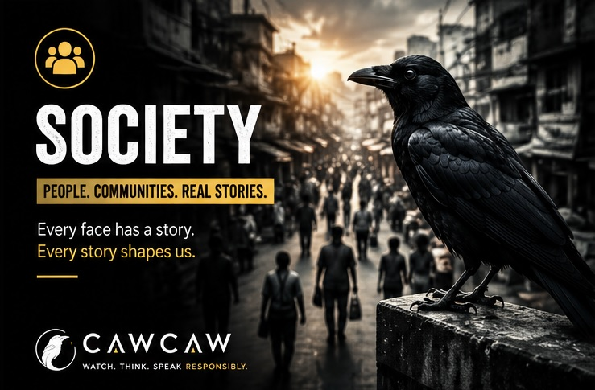
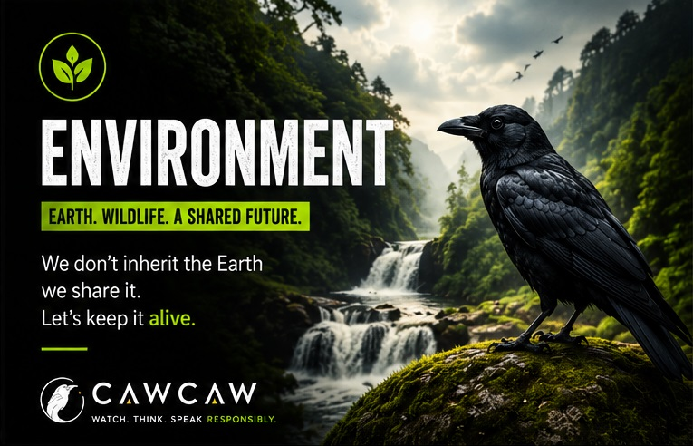
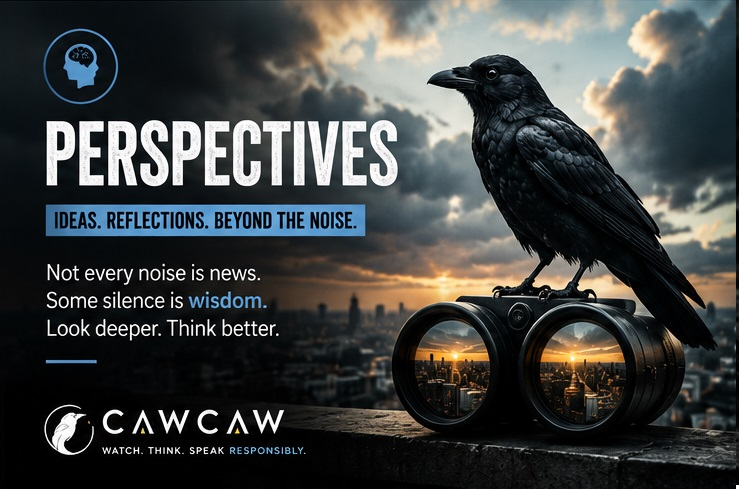

SOCIETY
The Most Important Desk Was Outside
The stories everyone sees but nobody writes
A voice from ordinary streets.

ENVIRONMENT
When Nature was my first toy
Watching the changing world around us
Nature, wildlife and human connections.

PERSPECTIVE
Beyond noise: responsible thinking
Ideas before reactions.